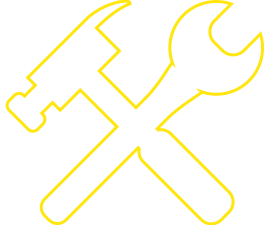

Contact
Say hello: presspresspublishing@gmail.com
Visit us: 427 North Eutaw Street, Baltimore, MD 21201
Hours: 1-4 Saturdays & other times as announced on our Instagram
Who We Are
Press Press is a fluid and reflexive network of co-authors and co-organizers. Depending on the project at hand, there may be anywhere from 1-45 people involved at a time and at various levels of capacity; from authoring publication chapters and library sections, speaking at an event, organizing a party, and more. Since we understand Press Press as a collectively-built and reflexive structure, we see all individuals and groups who steps into the project as crucial members of our team. However, there are some more consistent organizers we want to note by name:
- Kimi Hanauer, Founding Artist & Editor
- Bomin Jeon, Organizing Member
- Valentina Cabezas, Organizing Member
- Rahul S. Shinde, Website & Digital Engineer
History
In 2014, Press Press started its partnership with Refugee Youth Project by holding creative writing workshops with a group of teens in Catonsville, Maryland. When starting to publish the work of our collaborators, we realized we needed to give our initiative a name, and so Press Press was born. Since then, Press Press has broadened its activities beyond the after-school program. However, our after-school workshops have continued to be a large thread of our practice as we carry the principles the program was initiated with throughout all of our work: embracing collaboration, self-representation, and difference.
What We Do
Through an understanding of publishing as the act of gathering a public, Press Press’s streams of work include public cultural programming, an open-access publishing shop that’s based on an Exchange Economy, publishing workshops in a refugee and immigrant only space, and the production of print and digital publications.
The Library
The Press Press library is a collection of resources and publications that were recommended and thematically organized by more than 35 individuals, collectives, and organizations throughout 2016-2017, each of which selected a range of resources they deemed most essential to their practices. While the collection was mostly created through a local contingency, it also works in conversation with a national network of artist-organized initiatives. Located in Press Press’s storefront, the library was created as a way of collectively molding the culture of the space, holding Press Press’s work accountable to its context, and building on our approach to publishing. Press Press also houses The Contemporary's collection of artist books and magazines.
Publishing Workshops with Refugee Youth Project
Through a partnership with Refugee Youth Project since 2014, Press Press hosts publishing workshops with teen refugees in an immigrant and refugee only space. The space is designed to counter the standard model of ESL (English Second Language) learning. The standard model operates in a way that erases or ignores the identities of the learners in an effort to fit them into the hegemonic linguistic mode of the United States. The collaborative space we’ve created, conversely, places the identities and narratives of the participants as central in the experience of learning and using English; or learning how ‘to be’ in English as one’s second language without erasing one’s native voice. For example, we regularly print poetry in the exact form it was written, without ‘correcting’ for grammar and spelling. The aim is to affirm the ways participants express themselves in this linguistic medium. This spring, we are shifting our program to hire five youth as professional writers for our upcoming publication, rather than hosting workshops with a larger group.
Exchange Economy
With Press Press’s Exchange Economy (EE), anyone can learn how to self-publish their work in our studio, in exchange for any contribution to the broader project. Through the use of time-banking, EE cultivates new programs, resources, workshops, and relationships in our storefront space, while building a community of new and experienced independent publishers. Participants only pay for the use of materials at cost and can choose to participate in one-on-one learning with a member of our team during our weekly open studio hours.
Publications
Press Press publishes a range of print and digital publications that give form to our programmatic and ethereal practice. Our collaborative process often takes upwards of a year to complete one publication and emphasizes social gathering as a primary mode of the work. Our publications vary widely in form, although we are keen to manifestos, conversations, and artist projects.
Press Press is supported [in part] by a grant from the Robert W. Deutsch Foundation.